- Абакумова Олеся Максимовна
- Студентка
- Российский университет дружбы народов
- 1132220832@pfur.ru
- https://github.com/omabakumova

Изучить принципы работы GPSS для реализации моделей двух стратегий обслуживания.
На пограничном контрольно-пропускном пункте транспорта имеются 2 пункта пропуска. Интервалы времени между поступлением автомобилей имеют экспоненциальное распределение со средним значением μ. Время прохождения автомобилями пограничного контроля имеет равномерное распределение на интервале [a, b]. Предлагается две стратегии обслуживания прибывающих автомобилей:
Автомобили образуют две очереди и обслуживаются соответствующими пунктами пропуска;
автомобили образуют одну общую очередь и обслуживаются освободившимся пунктом пропуска.
Исходные данные: μ = 1, 75 мин, a = 1 мин, b = 7 мин.
Целью моделирования является определение:
характеристик качества обслуживания автомобилей, в частности, средних длин очередей; среднего времени обслуживания автомобиля; среднего времени пребывания автомобиля на пункте пропуска;
наилучшей стратегии обслуживания автомобилей на пункте пограничного контроля;
оптимального количества пропускных пунктов.
В качестве критериев, используемых для сравнения стратегий обслуживания автомобилей, выберем:
коэффициенты загрузки системы;
максимальные и средние длины очередей;
средние значения времени ожидания обслуживания.
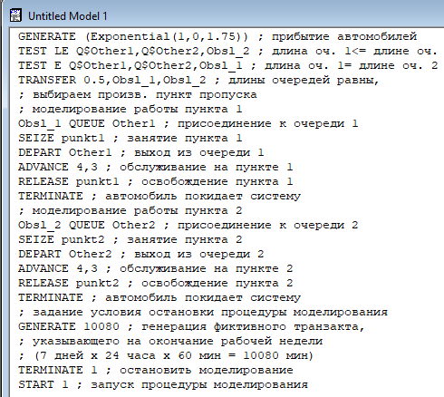
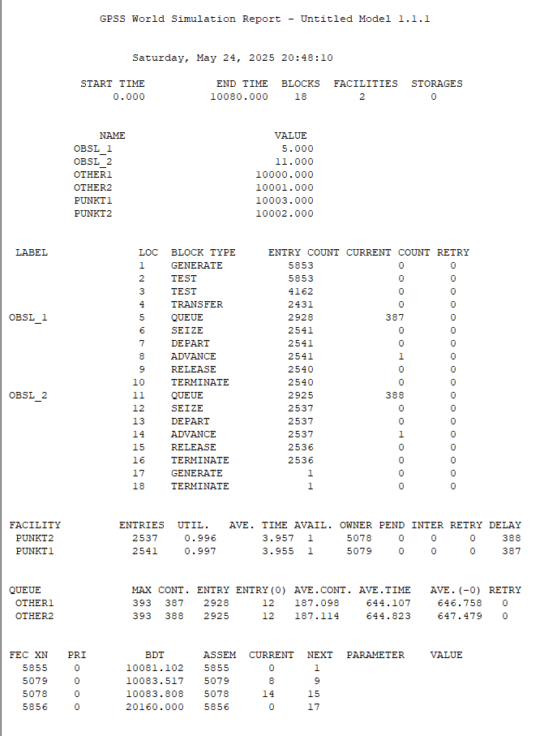
Составить модель для второй стратегии обслуживания, когда прибывающие автомобили образуют одну очередь и обслуживаются освободившимся пропускным пунктом;
Свести полученные статистики моделирования в таблицу
По результатам моделирования сделать вывод о наилучшей стратегии обслуживания автомобилей;
коэффициент загрузки пропускных пунктов принадлежит интервалу [0, 5; 0, 95];
среднее число автомобилей, одновременно находящихся на контрольно-пропускном пункте, не должно превышать 3;
среднее время ожидания обслуживания не должно превышать 4 мин.
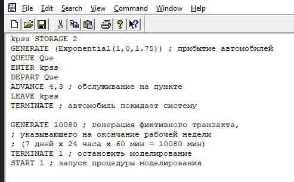
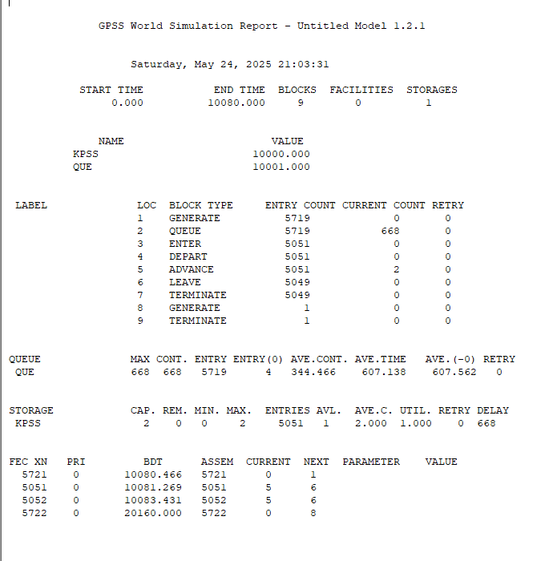
| Показатель | стратегия 1 | стратегия 2 | ||
|---|---|---|---|---|
| пункт 1 | пункт 2 | в целом | ||
| Поступило автомобилей | 2928 | 2925 | 5853 | 5719 |
| Обслужено автомобилей | 2540 | 2536 | 5076 | 5049 |
| Коэффициент загрузки | 0,997 | 0,996 | 0,9965 | 1 |
| Максимальная длина очереди | 393 | 393 | 786 | 668 |
| Средняя длина очереди | 187,098 | 187,114 | 374,212 | 344,466 |
| Среднее время ожидания | 644,107 | 644,823 | 644,465 | 607,138 |
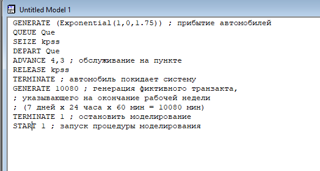
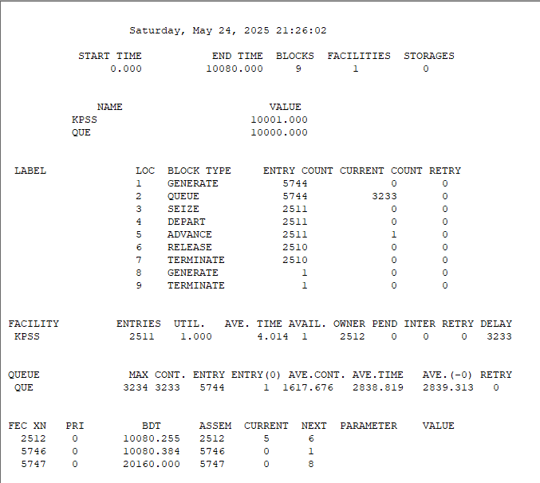
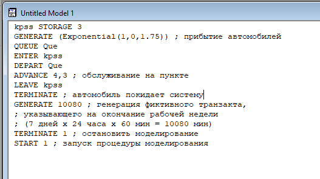
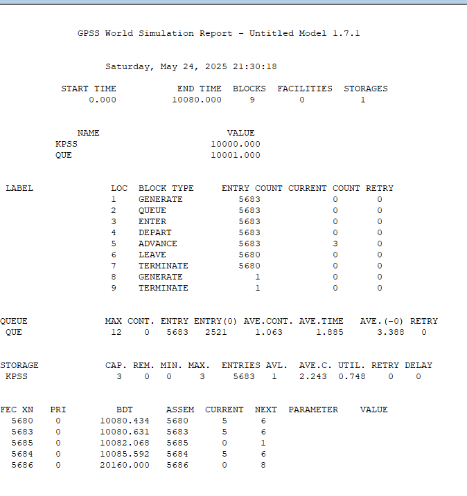
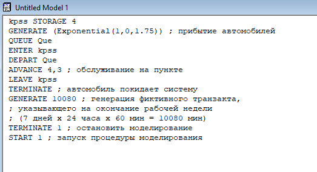
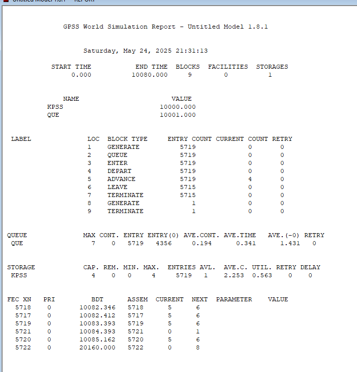
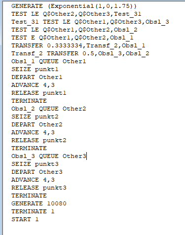
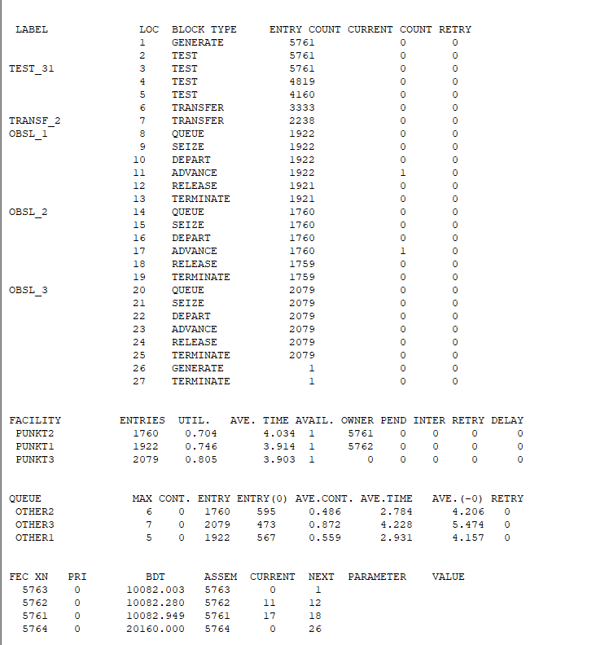
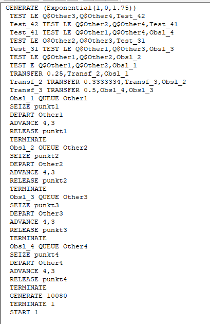
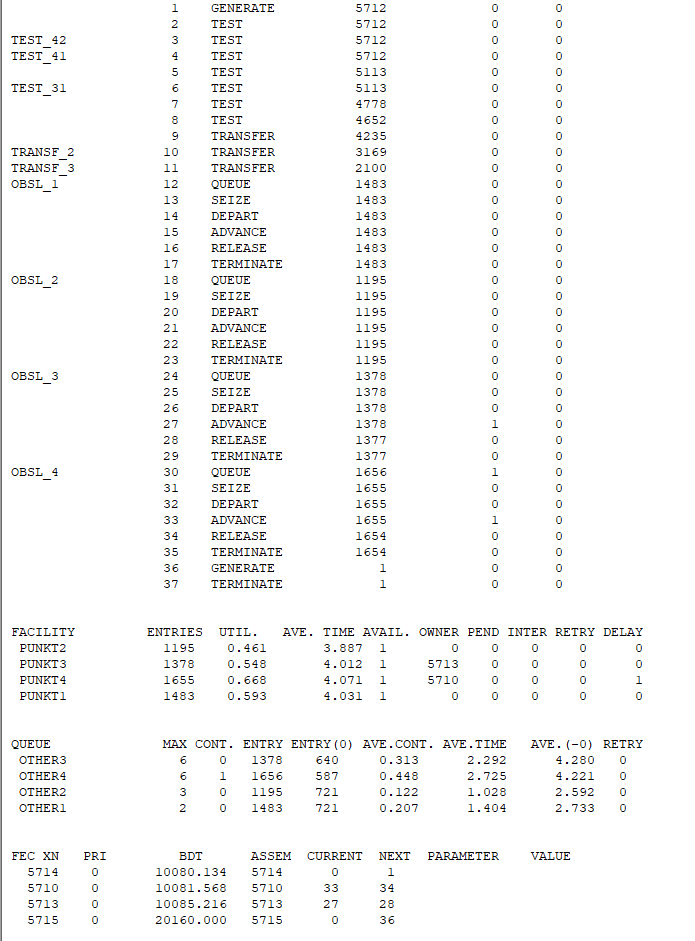
| Показатель | 1 п. | С1, 2п. | С2, 2п. | С1, 3п. | С2, 3п. | С1, 4п. | С2, 4п. |
|---|---|---|---|---|---|---|---|
| Загрузка | 1.000 | 0.9965 | 1.000 | 0.752 | 0.748 | 0.5675 | 0.563 |
| Авто в очереди | 1618 | 376.2 | 346.4 | 4.172 | 3.306 | 3.36 | 2.447 |
| Время ожидания | 2838 | 644.5 | 607.1 | 3.354 | 1.885 | 1.923 | 0.341 |
4 пункта: Обе стратегии с 4 пунктами соответствуют критериям задания, обеспечивая низкий коэффициент загрузки и минимальное время ожидания.
3 пункта: Только Стратегия 2 с 3 пунктами показывает приемлемые результаты, близкие к варианту с 4 пунктами.
В процессе выполнения данной лабораторной работы я изучила приципы работы GPSS для реализации моделей двух стратегий обслуживания.